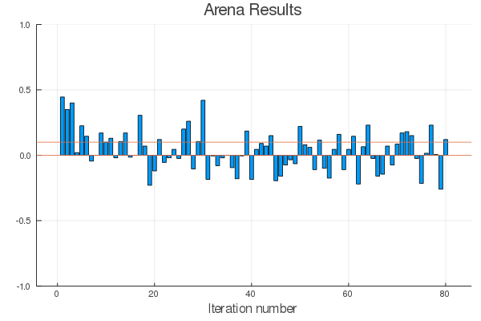
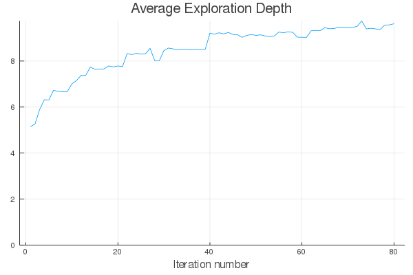
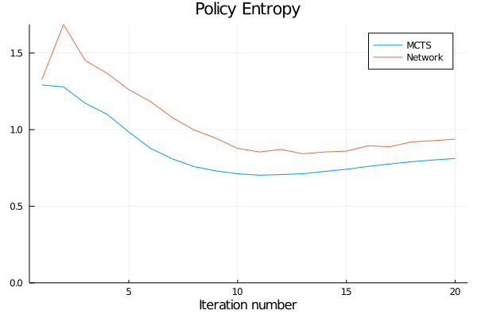
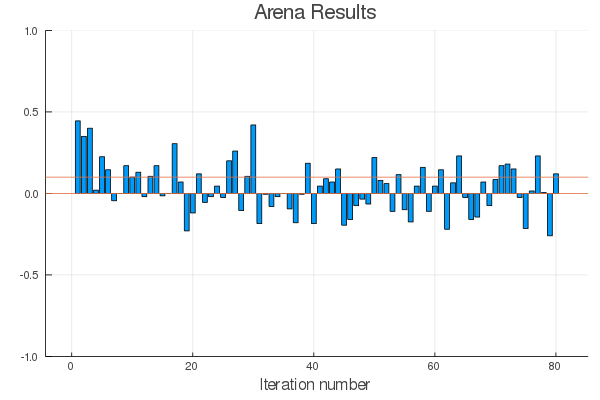
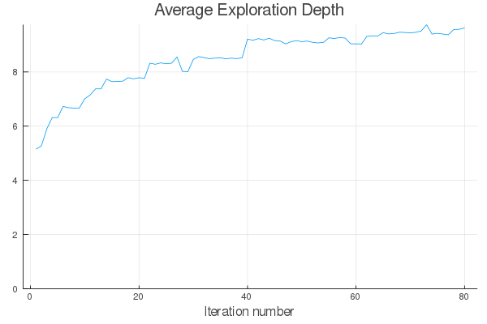
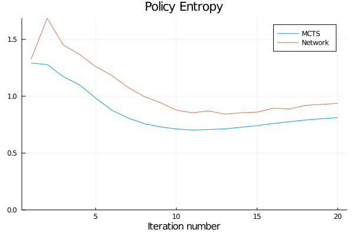
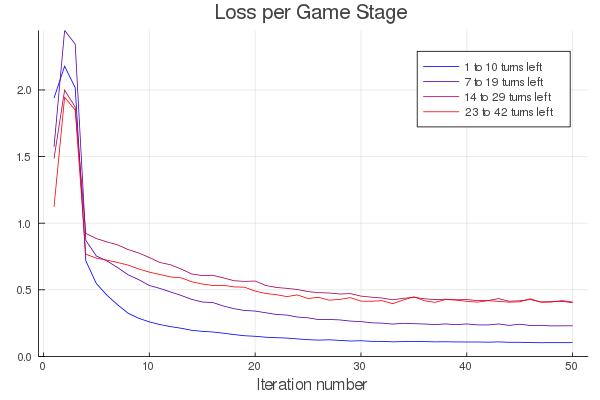
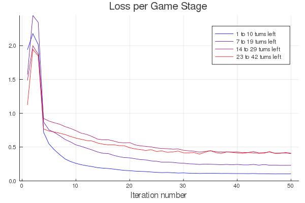
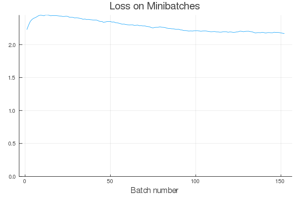
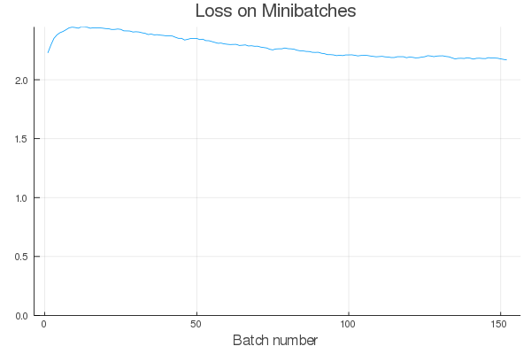

Package Overview
The philosophy of this project is to provide an implementation of AlphaZero that is simple enough to be widely accessible for students and researchers, while also being sufficiently powerful and fast to enable meaningful experiments on limited computing resources.
On this page, we describe some key features of AlphaZero.jl:
- An asynchronous MCTS implementation
- A series of opt-in optimizations to increase training efficiency
- Generic interfaces for games and neural networks
- A simple user interface to get started quickly and diagnose problems
Asynchronous MCTS
A key MCTS optimization that is implemented in AlphaZero.jl is to allow several workers to explore the search tree asynchronously. Doing so requires a bit of care to ensure that all workers are not always exploring the same branch simultaneously, which is done by introducing a virtual loss mechanism.
Perhaps surprisingly, our implementation is fully sequential and workers are not scheduled on multiple cores. However, the real gain comes from enabling game positions to be evaluated by the neural network in large batches, thereby maximizing the GPU utilization.
We plot below the resulting speedup on self-play data generation for our connect four agent as a function of the number of asynchronous workers. Using scripts/profile/async_mcts.jl on our machine (a desktop computer with an Intel Core i5 9600K processor and an 8GB Nvidia RTX 2070 GPU), we obtain a 25x speedup for 128 workers:

Note that the virtual loss induces an exploration bias that can become significant when the number of workers gets too close to the total number of MCTS simulations performed. For this reason, we only use 32 workers in our connect four experiment and settle for a 14x speedup.
We implemented MCTS (both synchronous and asynchronous) in a standalone module. Thanks to Julia's great support for coroutines, adding support for asynchronicity to a vanilla implementation only required some minor refactoring and a few dozens lines of additional code.
Training Optimizations
AlphaZero.jl has out-of-the-box support for many of the optimizations introduced in Oracle's series and also implements new ones. These include:
- Position averaging
- Memory buffer with growing window
- Cyclical learning rates
- Symmetry-based data augmentation and game randomization
All these optimizations are documented in the Training Parameters section of the manual.
Game Interface
You can use AlphaZero.jl on the game of your choice by simply implementing the Game Interface. Currently, there is support for two-players, symmetric (the rules are the same for both players), zero-sum games with finite action spaces and perfect information. We plan to handle more kinds of games in the future.
When adding support for a new game, we recommend following some conventions to ensure that it works properly with all helper scripts in the scripts directory.
Network Interface
AlphaZero.jl is agnostic to the choice of deep learning framework and allows you to plug any neural network that implements the Network Interface. For convenience, we provide a library of standard networks based on Knet. Right now, it features templates for two-headed multi-layer perceptrons and convolutional resnets.
User Interface and Utilities
AlphaZero.jl comes with batteries included. It features a simple user interface along with utilities for session management, logging, profiling, benchmarking and model exploration.
- A session management system makes it easy to interrupt and resume training.
- An interactive command interpreter can be used to explore the behavior of AlphaZero agents.
- Reports are generated automatically after each training iteration to help diagnosing problems and tuning hyperparameters. An extensive documentation of collected metrics can be found in Training Reports and Benchmarks.
Finally, because the user interface is implemented separately from the core algorithm, it can be extended or replaced easily.
 





 

 
